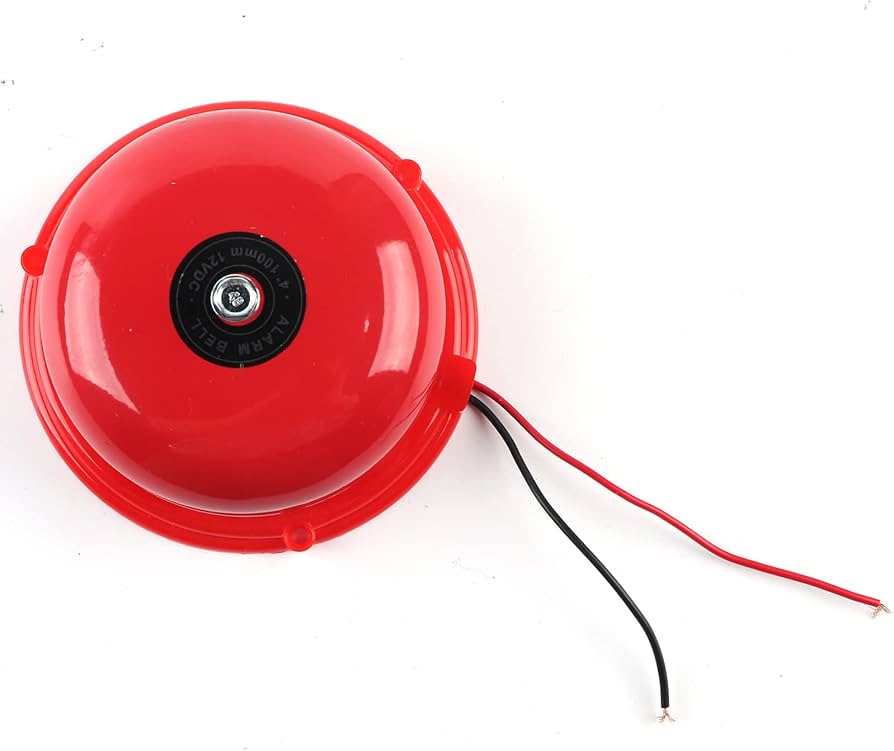
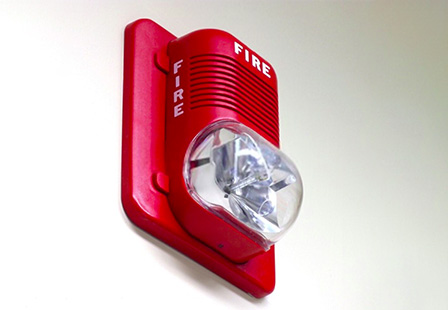
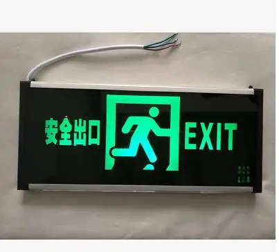

Alarmas audibles
Son dispositivos diseñados para emitir un sonido fuerte y distintivo con el objetivo de alertar a las personas sobre una situación de emergencia,
pueden emitir sonidos en una amplia gama de frecuencias, desde tonos agudos hasta sonidos más graves. La frecuencia y el tono del sonido son importantes
para garantizar que la alarma sea efectiva y reconocible.
Tipos
Sirenas: Emite un sonido continuo o pulsante que es muy efectivo para captar la atención. Las sirenas son comunes en sistemas de alarma contra
incendios y en vehículos de emergencia.
Bocinas: Proporcionan un sonido fuerte y penetrante. A menudo se usan en sistemas de alarma de edificios y en instalaciones industriales.
Campanas: Emiten un sonido similar al de una campana, que puede ser menos agudo que una sirena pero igualmente efectivo en alertar a las personas.
Timbres: Pueden emitir sonidos de timbre o campana. En algunos casos, los timbres son utilizados junto con otras señales visuales para alertar a las personas.

Alarmas visuales
son dispositivos diseñados para proporcionar señales de alerta mediante luces o indicaciones visuales, complementando o reemplazando las alarmas audibles en sistemas
de alarma contra incendios y otros sistemas de emergencia. Estas alarmas son fundamentales para garantizar que las alertas sean percibidas por todas las personas en
un entorno, especialmente en situaciones donde el sonido podría no ser suficiente, como en ambientes ruidosos o para personas con discapacidad auditiva.
Tipos
Luces Estroboscópicas: Emiten destellos brillantes y rápidos para captar la atención. Son especialmente efectivas en ambientes ruidosos o cuando se necesita
una señal de alerta que sea claramente visible.

Lámparas de Alerta: Usan una luz continua, a menudo de colores como rojo o amarillo, para indicar una emergencia. La luz puede ser fija o parpadear
para diferenciar el tipo de alerta.
Pantallas LED: Pueden mostrar mensajes o símbolos en lugar de solo una luz. Algunas pantallas LED pueden proporcionar información adicional, como la
ubicación de la emergencia o instrucciones de evacuación.
Proyectores de Señales: Proyectan imágenes o señales en superficies para alertar sobre la emergencia de manera visual
